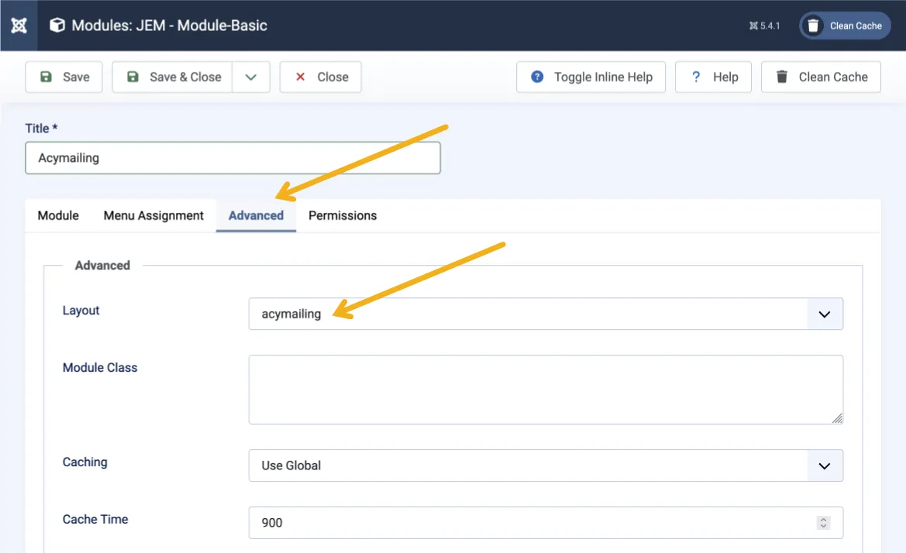
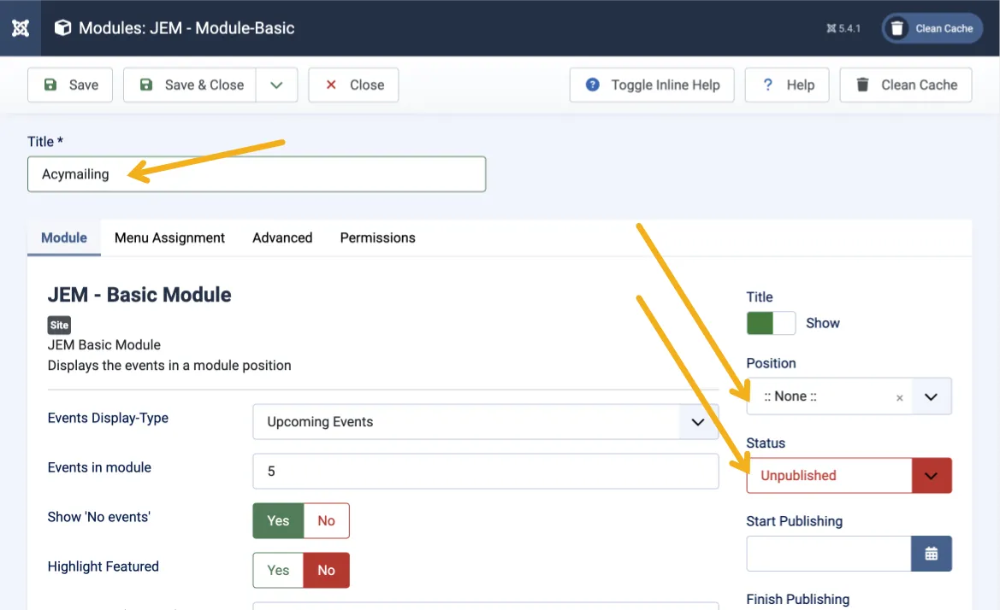
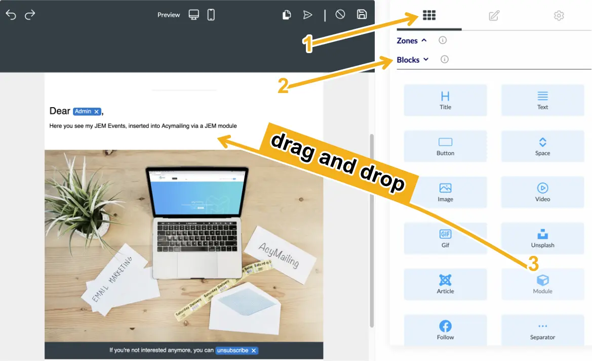
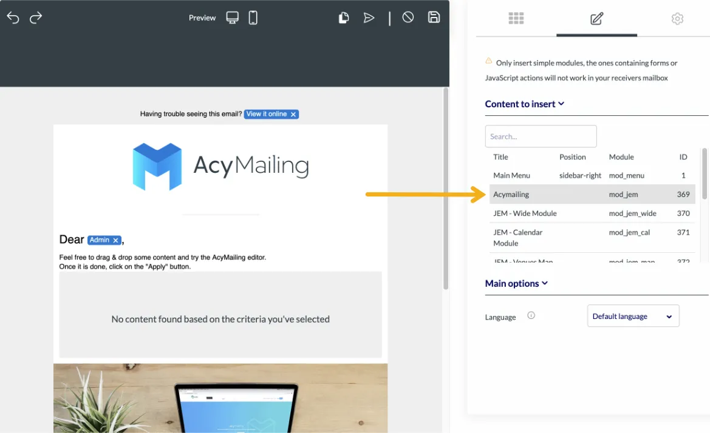
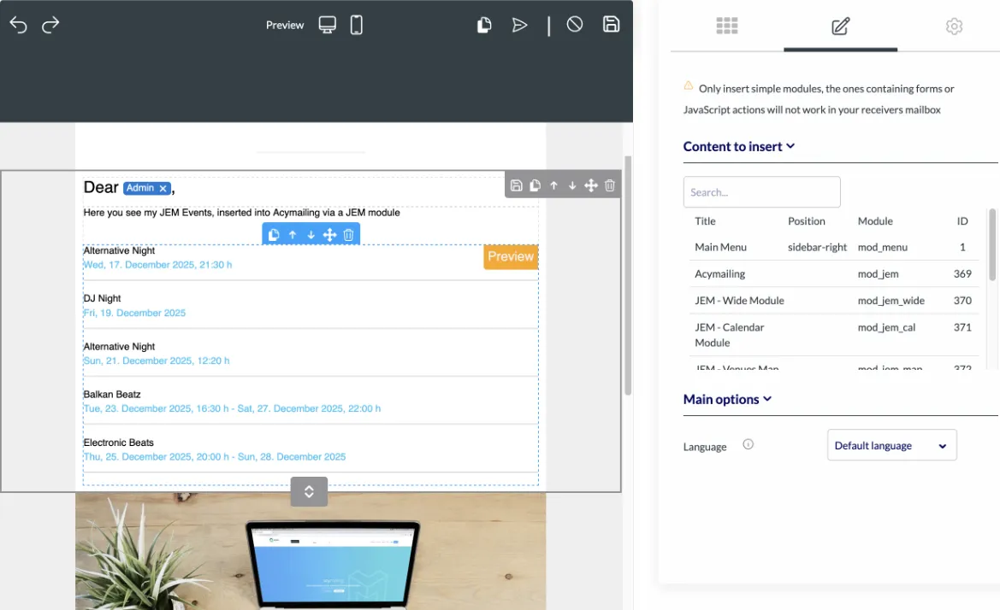

Embedding JEM Events in Acymailing
1. Providing the JEM Events
Go to
Site Modules
and create a new module
JEM - Basic Module
.
Give the module the title
Acymailing
.

Select the desired settings for displaying the events.
Open the
Advanced
tab.
Under
Layout
, select
acymailing
from the dropdown list.

Save the module. It does
not
need a position assigned and does
not
need to be published.
2. Inserting into Acymailing
Open the desired email in edit mode.
Under
Blocks
, select the
Module
block.

Drag and drop the block to the desired position in the email.
Click on the inserted block and select the
Acymailing
module.

The events will now appear in the email preview according to the settings of the
JEM - Basic Module
.

Note: The events will automatically include links to their respective event pages in the email.
3. Layout Customization (Optional)
For customized or enhanced display (e.g., with event or venue images), custom layouts can be created in JEM modules.
These layouts can then be embedded into Acymailing in the same way.